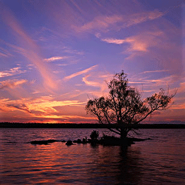
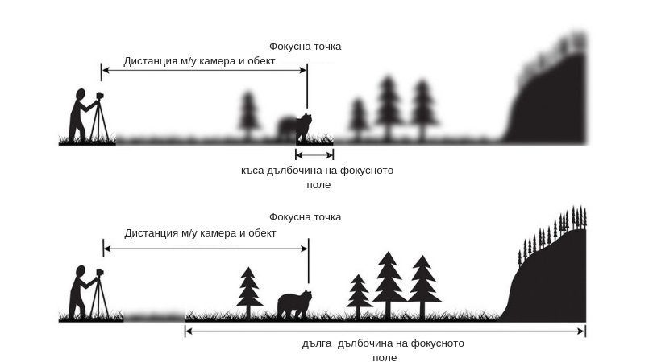
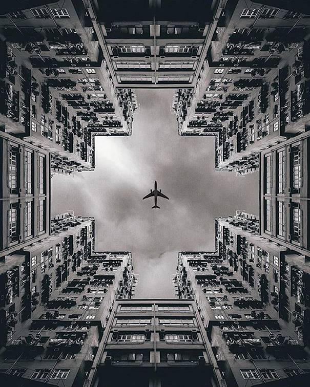
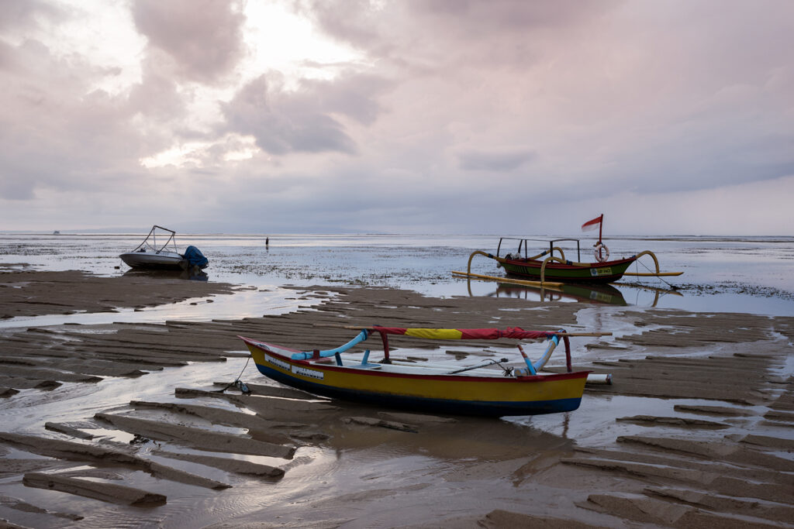

Композицията е езикът на фотографията – начинът, по който превръщате триизмерния свят в двуизмерно изображение и предавате емоция, история и съобщение.
Добрата композиция превръща обикновената снимка в произведение на изкуството. Тя създава визуален ред от хаоса и насочва погледа на зрителя точно там, където искате.
Чрез съзнателно управление на елементите: промяна на позицията (гледна точка), избор на обектив, настройки на блендата и изчакване на правилния момент.
Навсякъде – от визьора на камерата по време на снимане на терен, до последващото изрязване (cropping) по време на обработка.
Преди да натиснете бутона. Попитайте се: „Какво снимам? Какво искам да кажа? Как да го подредя?“

Разделянето на кадъра на мрежа 3х3 или използването на Златната спирала създава много по-динамична и естествена снимка, отколкото ако обектът е просто в центъра.
Пътища, релси, огради или редици от дървета насочват окото директно към главния обект. Диагоналите внасят динамика, скорост и драматизъм.

Използвайте прозорци, арки или клони, за да рамкирате обекта. Включването на преден, среден и заден план прави двуизмерната снимка да изглежда триизмерна.

Отраженията във вода носят чувство на спокойствие. Големите празни зони (негативно пространство) позволяват на обекта да „диша“ и засилват мащаба.

Групи от 3, 5 или 7 обекта изглеждат по-естествено за човешкия мозък. Повтарящите се модели (шарки) стават още по-силни, ако уловите дефект или акцент в тях.
| № | Стъпка | Описание |
|---|---|---|
| 1 | Главна точка | Идентифицирайте главния обект (Visual Anchor) – какво е най-важното нещо? |
| 2 | Изчистете фона | Премахнете смущаващи детайли, кофи за боклук или ярки петна. Прилагайте „По-малкото е повече“. |
| 3 | Гледна точка | Променете височината си – клекнете за монументалност или се качете нависоко за птичи поглед. |
| 4 | Техника & Светлина | Изберете композиционно правило и съобразете откъде падат сенките върху геометрията. |
„Научете правилата като професионалист, за да можете да ги нарушавате като артист.“